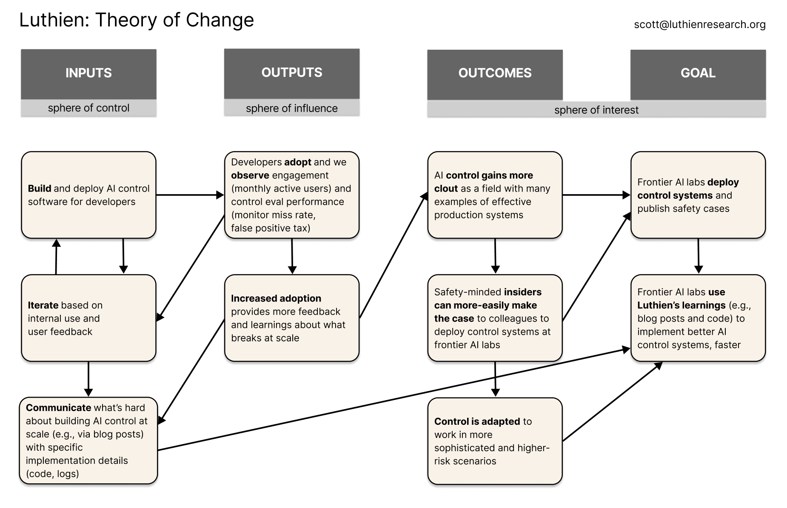

Why we're doing this
Mission
[PLACEHOLDER: Luthien's mission hasn't changed. We're building AI control infrastructure that makes it practical to deploy safety protocols in production. The PBC structure lets us move faster while keeping the mission legally enshrined.]
Speed
[PLACEHOLDER: We're in Seldon Labs Batch #2 (Jan-Apr 2026 in San Francisco), which requires for-profit structure for their investment. Grant cycles move slower than the market we're trying to shape. Coding agent adoption is accelerating; we need to ship product now, not in 12-18 months.]
Precedent
[PLACEHOLDER: Apollo Research announced the same nonprofit-to-PBC transition on January 20, 2026. Their rationale mirrors ours: mission-driven AI safety work increasingly requires the scale and speed that for-profit structure enables.]
What Luthien does
[PLACEHOLDER: Brief description of Luthien for readers who don't know us. Open-source proxy that sits between AI coding agents and model APIs. Intercepts every request/response to enforce configurable control policies. Link to our Theory of Change for the full picture.]
Details of the new organization
Product focus
[PLACEHOLDER: What we're building and for whom. AI control infrastructure for developers using coding agents. Policy pipeline, conversation logging, dangerous command detection.]
Research independence
[PLACEHOLDER: How we maintain research independence alongside product work. Open-source commitment. Relationship with Redwood's control agenda.]
Investment
[PLACEHOLDER: Seldon Labs context. Any other investment details to share.]
Details of the transition
Governance
[PLACEHOLDER: Mission-aligned governance commitments. Board structure. How we ensure the PBC stays true to its public benefit purpose.]
Nonprofit disposition
[PLACEHOLDER: What happens to the nonprofit entity. How existing grant funds are handled.]
What stays the same
[PLACEHOLDER: Open-source commitment. Mission. Team. The work doesn't change; the structure does.]
← All posts